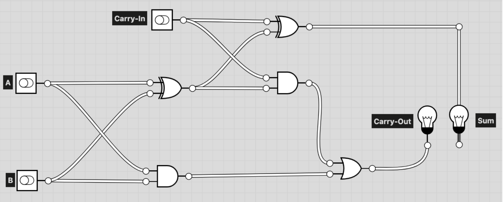
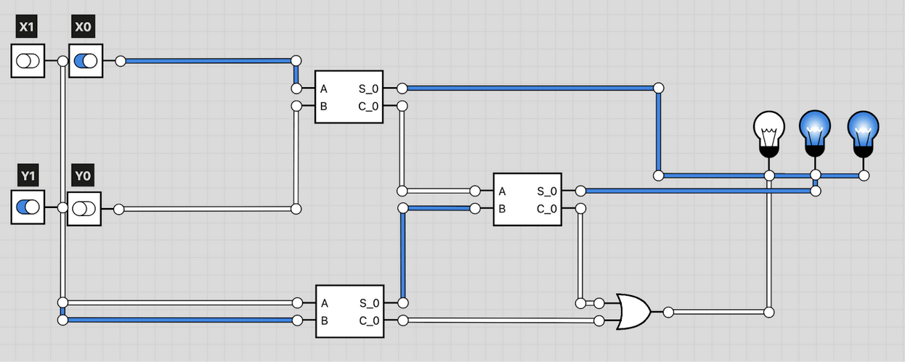

digital logic X metaphysics

The main deliverable for this unit was a logic circuit for a 2-bit adder, and later a logic circuit for a 2-bit subtractor. We prepared for this by visiting the Carleton Makerspace and constructed some small logic circuits using breadboards, logic gates and LEDs.
Metaphysics is the branch of philosphy that deals with very abstract but basic things like being and identity and time and space. It's very easy to get lost in all the layers of abstraction that metaphysical discussions can bring, due to the content of discussion: How do we know something is real? How do we know what is true? What is identity? And in this particular case, the question plaguing my mind: what is a computer?
Full Adder
The Full Adder connects two Half Adders together, and accounts for an incoming 'Carry' bit, presumably from some previous calculation. The carry bit is currently just an input, but the logic works the same as if it were from a real calculation.
2-Bit Adder
The 2-Bit Adder is similar to the Full Adder, but it allows a previous calculation completely. The carry bit from the first calculation (0th bit) goes into the second calculation (1st bit).
Reflections from Class DiscussionsI think the two biggest questions I had from this unit were 1. What does it mean for a computer to be dead? Is a dead computer still a computer? and 2. Would computers exist without humans?
For the first question, I think the answer lies in how we view language and how it shapes the objects we describe with it. A computer isn't alive, it isn't a living creature, but we assign the states of 'alive' and 'dead' to it because it is useful to humans to see them so. It is a convenient way to describe the behaviour that we see from these machines, even if those descriptions are technically inaccurate. I think that a dead computer is still a computer, because when we talk about a computer being dead, we are not using the word in the same way as we use it to describe the death of a human being, or even animals. When a computer is 'dead' it means it cannot be used at the moment. Sometimes it also means that it cannot be used ever again, which mirrors the real definition of death, but it is fundamentally wrong to compare the two. A computer is 'something to be used', and so death means that it can no longer be used. A living being, a human, has agency.
For the second, I have a weird, hypothetical thought. Imagine a civilisation where instead of humans evolving from apes and reaching the top of the food chain, a species of lizard evolved to reach that apex. Would these lizards-people, being a hypothetical mirror of our civilisation, not have some form of technology that would be comparable to our computers? They would have different user interfaces and different designs, but they would, at their core, be machines that assist the user in some task. This thought experiment leads me to think that computation cannot be a human thing, at least not in a generic sense.